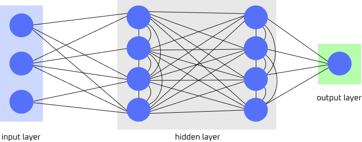

RECURRENT NEURAL NETWORKS
OVERVIEW
Recurrent neural networks are a type of neural network that utilizes feedback loops, passing output data back as input data sequentially. This is done by utilizing a fundamental RNN unit called the recurrent unit. A recurrent unit holds a hidden state of its previous input, updating that input at each time step for every current input with it. This feedback mechanism enables RNNs to "remember and "learn" from past inputs while incorportating that knowledge into its current processing. This enables RNNs to capture patterns and dependencies within sequences across time.

Figure: Simplified diagram of a RNN. Image provided by Serena Ngo. See credits for references.
There are four types of RNNs:
- one-to-one RNN: The simplest type of RNN architecture where there is a single input and a single output. This is useful for binary classification where there is no sequential data involved.
- one-to-many RNN: This RNN architecture produces multiple outputs over time from a single input. This is useful for where input triggers sequences of predictions. This is seen with image captionaning where a single image can generate sequences of words as captions.
- many-to-one RNN: For this RNN architecture, it receives a sequence of inputs and generates a single output. A use example of this is inputting a sentence (a sequence of words) and receiving a single output that may describe the sentence in one word.
- many-to-many RNN: A sequence of inputs is processed and generates a sequence of outputs for many-to-many RNNs. This is commonly used in language translation tasks where inputting text from one langauge can produce multiple translations of the given text.
ADVANTAGES AND DISADVANTAGES
Recurrent neural networks core advantages include being able to retain information from previous inputs. This makes RNNs good for anything that requires sequential memory, such as time-series predictions. RNNs are also powerful when combined with other neural networks, such as convolutional neural networks . This creates an enhanced model that can improve performance on image and video data processing. However, RNNs suffers when it comes to learning from long-term dependencies. RNNs faces a main training challenge: vanishing gradient problem. A vanishing gradient is when there is instablity in the training process due to earlier gradients shrinking. This happens in RNNs when output is fed back as input continously, creating multitudes of calculations of earlier weights which causes the gradient to shrink. Because of this, RNNs suffer from long term learning.
SEE MORE